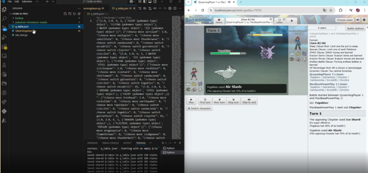

Pokémon Showdown Reinforcement Learning Agent

Overview
A reinforcement learning agent built to battle on Pokémon Showdown using self‑play, large‑scale simulation, and policy optimization. The system encodes battle states (HP, stat boosts, type matchups, predicted opponent actions) into structured observations and trains policies using DQN and PPO. The agent learns competitive strategies through thousands of simulated matches, improving decision‑making accuracy and long‑term win rate.
My Responsibilities
- Designed a custom RL environment for Pokémon Showdown battle states
- Implemented DQN and PPO training pipelines with PyTorch
- Built reward shaping, action masking, and opponent‑modeling heuristics
- Integrated with Pokémon Showdown’s battle engine for automated self‑play
- Ran large‑scale training experiments across thousands of simulated matches
- Developed evaluation tools for win‑rate tracking and policy stability
Technical Highlights
- Custom RL Environment: Encodes full battle state including team composition, stat boosts, hazards, and predicted switches
- Algorithms: DQN, PPO, epsilon‑greedy exploration, entropy‑based regularization
- Simulation: Automated self‑play using Pokémon Showdown’s battle engine
- Opponent Modeling: Heuristics predicting switches and high‑impact moves
- Training Tools: Replay buffers, prioritized sampling, policy evaluation
- Metrics: Win‑rate tracking, action‑value visualization, stability analysis
Tech Stack
Featured Components
Custom RL Environment
Converts Pokémon battle states into structured observations, including HP, stat boosts, type matchups, hazards, and predicted opponent actions.
Policy Training (DQN & PPO)
Implemented multiple RL algorithms to compare stability, exploration efficiency, and long‑term strategic performance.
Opponent Modeling
Added heuristics to predict switches and high‑impact moves, improving mid‑game strategy and reducing random exploration.
Large‑Scale Self‑Play
Integrated with Pokémon Showdown’s battle engine to run thousands of automated matches for experience collection and policy refinement.